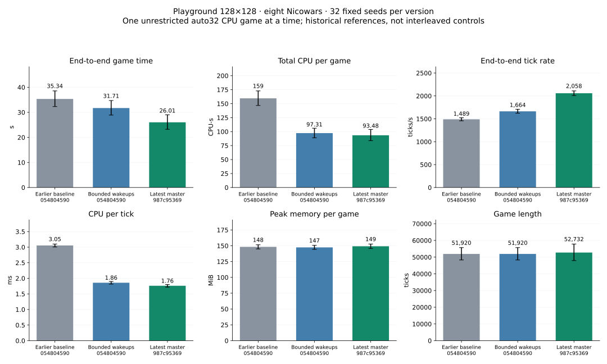

Release revision 987c953698bb3f0bfd1078184773075ba3313091, one unrestricted auto32 CPU game at a time, eight Nicowars on the fixed128×128 map, same32 game seeds. 32 winners and 0 caps.

| Metric (mean per game) | Earlier baseline 054804590 | Bounded wakeups 054804590 | Latest master 987c95369 |
|---|---|---|---|
| End-to-end game time (s) | 35.340 | 31.714 | 26.014 |
| Total CPU per game (CPU-s) | 159.478 | 97.309 | 93.480 |
| End-to-end tick rate (ticks/s) | 1,489.323 | 1,663.675 | 2,057.993 |
| CPU per tick (ms) | 3.054 | 1.858 | 1.761 |
| Peak memory per game (MiB) | 148.264 | 147.446 | 149.208 |
| Game length (ticks) | 51,920.000 | 51,920.000 | 52,732.000 |
| Metric | Change | Paired95% interval | Adverse seeds |
|---|---|---|---|
| End-to-end game time | -17.97% | [-26.75%, -8.41%] | 8/32 |
| Total CPU per game | -3.93% | [-13.94%, +6.87%] | 14/32 |
| End-to-end tick rate | +23.70% | [+19.59%, +27.86%] | 1/32 |
| CPU per tick | -5.26% | [-8.20%, -2.27%] | 11/32 |
| Peak memory per game | +1.19% | [-1.48%, +3.90%] | 16/32 |
| Game length | +1.56% | [-7.60%, +11.17%] | 16/32 |
| User CPU per game | -3.41% | [-13.67%, +7.79%] | 14/32 |
| System CPU per game | -8.44% | [-16.04%, -0.13%] | 11/32 |
| Voluntary context switches | -2.83% | [-11.23%, +6.27%] | 14/32 |
| Involuntary context switches | +4.66% | [-8.88%, +19.57%] | 16/32 |
Winner and ending tick agree with the earlier bounded-wakeup run on 0/32 seeds. Master changed hiring timing; differences in completion time include changed game trajectories as well as execution costs.
Mean per-game peak RSS and the observed maximum are distinct: latest maximum 174.86MiB. Latest aggregate tick rate: 2027.06 ticks/s; pooled CPU/tick: 1.773ms. Total CPU across latest completed games: 2991.37CPU-s.
Every game · Comparisons and intervals · Summary/methods · Raw audit
Across the completed games, total simulated ticks changed +1.56% and aggregate end-to-end tick rate changed +23.82%. Full completion time changed -17.97%. This is an accounting decomposition (total time = total ticks / aggregate tick rate), not proof that a tick does the same work on both engine versions. Mean recorded orders per game: 22,791 before versus 22,249 on latest.